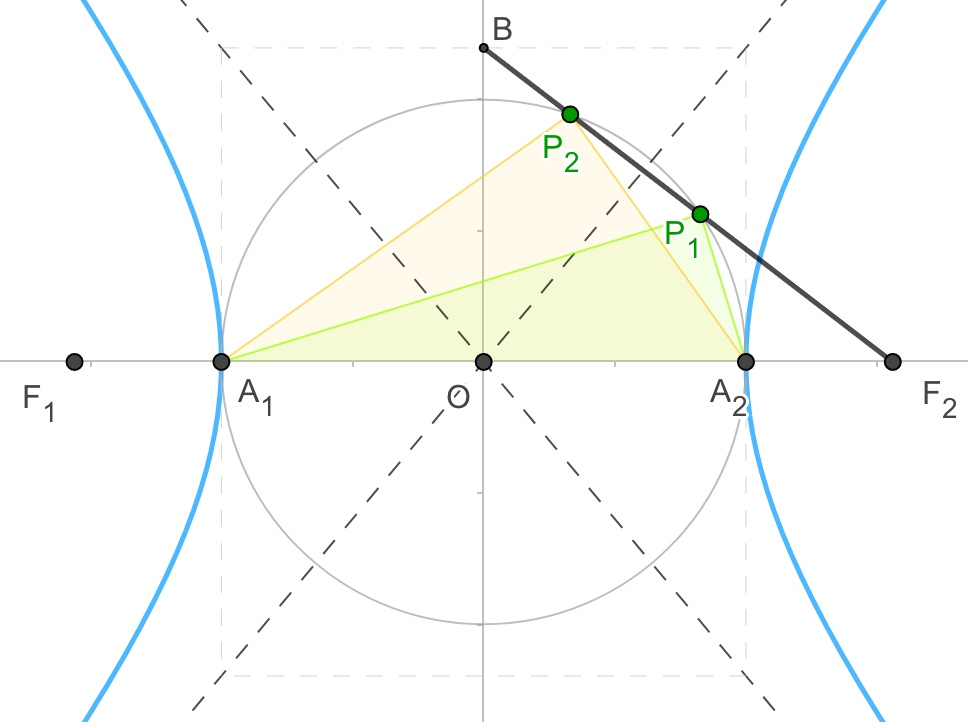

2014年浙江理
2014 浙江 理 1 (集合)
设全集U={x∈N|x≥2},集合A={x∈N|x2≥5},则CUA=
A.∅
B.{2}
C.{5}
D.{2,5}
2014 浙江 理 2 (复数,逻辑)
已知i为虚数单位,a,b∈R,则"a=b=1"是"(a+bi)2=2i"的
A.充分不必要条件
B.必要不充分条件
C.充分必要条件
D.既不充分也不必要条件
2014 浙江 理 3 (三视图)
某几何体的三视图如图所示(单位:cm),则该几何体的表面积是()cm2

A.90
B.129
C.132
D.138
2014 浙江 理 4 (三角函数性质)
为了得到函数y=sin3x+cos3x的图像,可以将函数y=2‾√cos3x的图像进行
A.向右平移π4个单位
B.向左平移π4个单位
C.向右平移π12个单位
D.向左平移π12个单位
2014 浙江 理 5 (二项式)
在(1+x)6(1+y)4的展开式中,记xmyn项的系数为f(m,n),
则f(3,0)+f(2,1)+f(1,2)+f(0,3)=
A.45
B.60
C.120
D.210
2014 浙江 理 6 (导数)
已知函数f(x)=x3+ax2+bx+c,且0<f(−1)=f(−2)=f(−3)≤3
A.c≤3
B.3<c≤6
C.6<c≤9
D.c>9
2014 浙江 理 7 (指数对数,函数图像)
在同一直角坐标系中,函数f(x)=xa(x≥0),g(x)=logax的图像可能是

2014 浙江 理 8 (向量,不等式)
记max{x,y}={x,x≥yy,x<y,min{x,y}={y,x≥yx,x<y,设a⃗ ,b⃗ 为平面向量,则
A.min{|a⃗ +b⃗ |,|a⃗ −b⃗ |}≤min{|a⃗ |,|b⃗ |}
B.min{|a⃗ +b⃗ |,|a⃗ −b⃗ |}≥min{|a⃗ |,|b⃗ |}
C.min{|a⃗ +b⃗ |2,|a⃗ −b⃗ |2}≥|a⃗ |2+|b⃗ |2
D.min{|a⃗ +b⃗ |2,|a⃗ −b⃗ |2}≤|a⃗ |2+|b⃗ |2
2014 浙江 理 9 (期望方差)
已知甲盒中仅有1个球且为红球,乙盒中有m个红球和n个蓝球(m≥3,n≥3),
从乙盒中随机抽取i(i=1,2)个球放入甲盒中
(a)放入i个球后,甲盒中含有红球的个数记为ξi(i=1,2);
(b)放入i个球后,从甲盒中取1个球是红球的概率记为pi(i=1,2);
则
A.p1>p2,E(ξ1)<E(ξ2)
B.p1<p2,E(ξ1)>E(ξ2)
C.p1>p2,E(ξ1)>E(ξ2)
D.p1<p2,E(ξ1)<E(ξ2)
2014 浙江 理 10 (三角函数性质,数列)
设函数f1(x)=x2,f2(x)=2(x−x2),f3(x)=13|sin2πx|,ai=i99,i=0,1,2,...,99
记Ik=|fk(a1)−fk(a0)|+|fk(a2)−fk(a1)|+...+|fk(a99)−fk(a98)|,k=1,2,3,则
A.I1<I2<I3
B.I2<I1<I3
C.I1<I3<I2
D.I3<I2<I1
2014 浙江 理 11 (程序)
若某程序框图如图所示,当输入50时,则该程序运算后输出的结果是()

2014 浙江 理 12 (期望方差)
随机变量ξ的取值为0,1,2,若P(ξ=0)=15,E(ξ)=1,则D(ξ)=()
2014 浙江 理 13 (线性规划)
当实数x,y满足⎧⎩⎨⎪⎪x+2y−4≤0,x−y−1≤0,x≥1,时,1≤ax+y≤4恒成立,则实数a的取值范围是()
2014 浙江 理 14 (排列组合)
在8张奖券中有一,二,三等奖各1张,其余5张无奖.奖这8张奖券分配给4个人,每人2张,
不同的获奖情况有()种(用数字作答)
2014 浙江 理 15 (函数性质)
设函数f(x)={x2+x,x<0−x2,x≥0,若f(f(a))≤2,则实数a的取值范围是()
2014 浙江 理 16 (圆锥曲线)
设直线x−3y+m=0(m≠0)与双曲线x2a2−y2b2=1(a>b>0)的两条渐近线分别交于
点A,B,若点P(m,0)满足|PA|=PB,则该双曲线的离心率是()
2014 浙江 理 17 (空间角)
如图,某人在垂直于水平地面ABC的墙面前的点A处进行射击训练.已知点A到墙面的距离为AB,
某目标点P沿墙面的射击线CM移动,此人为了准确瞄准目标点P,需要计算由点A观察点P的仰角
θ的大小.若AB=15m,AC=25m,∠BCM=30o,则tanθ的最大值是()

2014 浙江 理 18 (解三角)
在ΔABC中,内角A,B,C所对的边分别为a,b,c,已知a≠b,c=3‾√,
cos2A−cos2B=3‾√sinAcosA−3‾√sinBcosB
(I)求C的大小
(II)若sinA=45,求ΔABC的面积
2014 浙江 理 19 (数列)
已知数列{an}和{bn}满足a1a2...an=(2‾√)bn,n∈N∗,若{an}为等比数列,
且a1=2,b3=6+b2
(I)求an与bn
(II)设cn=1an−1bn(n∈N∗).记数列{cn}的前n项和为Sn
(i)求Sn
(ii)求正整数k,使得对任意n∈N∗,均有Sk≥Sn
2014 浙江 理 20 (线面关系, 空间角)
如图,在四棱锥A−BCDE中,平面ABC⊥平面BCDE,∠CDE=∠BED=90o,
AB=CD=2,DE=BE=1,AC=2‾√
(I)证明:ED⊥平面ACD
(II)求二面角B−AD−E的大小.

2014 浙江 理 21 (解析大题)
如图,已知椭圆C:x2a2+y2b2=1,(a>b>0),动直线l与椭圆C只有一个公共点P,
且P在第一象限
(I)已知直线l的斜率为k,用a,b,k表示点P的坐标
(II)若过原点O的直线l1与l垂直,证明:点P到直线l1的距离的最大值为a−b

2014 浙江 理 22 (导数)
已知函数f(x)=x3+3|x−a|,a∈R
(I)若f(x)在[−1,1]上的最大值和最小值分别记为M(a),m(a),求M(a)−m(a)
(II)设b∈R,若[f(x)+b]2≤4对x∈[−1,1]恒成立,求3a+b的取值范围
【解析几何大题】例题0328A
已知抛物线C:y2=2px(p>0)的焦点为F,准线为l,若点P在C上,点E在l上,
且ΔPEF是变长为8的正三角形
(I)求C的方程
(II)过点(1,0)的直线n与C相较于A,B两点,若FA−→−⋅FB−→−=−23,求ΔFAB的面积
小蒋的解答(2019-03-28):
(I)


知识点1:抛物线定义....................
过P点做准线的垂线,交于点H,根据抛物线定义,PH=PF
题意可知PE=PF,∴PE=PH,也就是E,H重合
知识点2:(初中)特殊三角形....................
易得ΔDEF为直角三角形,且∠FED=30o
∴DF=12EF=4
知识点3:抛物线方程....................
焦点到准线的距离为|p|,|p|=DF=4
题意p>0,∴p=4
∴抛物线方程为y2=8x
(II)

步骤1:设点线,明确目标,分析联动关系....................
(★)设点A(x1,y1),B(x2,y2),
(★)∵直线lAB过点(1,0)∴可设直线lAB为:x=my+1,一般式为x−my−1=0
注意:抛物线开口是左右时,最好把直线设成形如x=my+1,而非y=k(x−1)
(★)目标:求三角形面积,也就求出直线的方程,也就是求出m
(★)联动关系:
| 几何(思考) |
|
代数(代入化简) |
| 当直线l移动(m) |
|
(m)满足一个关系式
(也就求得了m的范围或值) |
| ⇓ |
|
⇑ 所有的(y1,y2)通过韦达定理换成(m) |
AB两点移动(y1,y2)
满足:FA−→−⋅FB−→−=−23 |
⇒ |
(y1,y2)满足一个关系式 |
步骤2:几何转代数....................
(★)几何:A,B两点→代数:需要联立方程,消元,韦达,Δ
联立:{x=my+1y2=8x
消元化简:y2−8my−8=0
y1+y2=8m
y1⋅y2=−8
此处直线必定与抛物线有两交点,不需要考虑Δ
(★)几何:三角形面积→代数:点线距离公式,两点距离公式
|AB|=(x1−x2)2+(y1−y2)2‾‾‾‾‾‾‾‾‾‾‾‾‾‾‾‾‾‾‾‾‾‾√
点F到直线AB的距离为:|2−m×0−1|12+(−m)2√,化简得距离为:112+m2√
三角形面积S=12(x1−x2)2+(y1−y2)2‾‾‾‾‾‾‾‾‾‾‾‾‾‾‾‾‾‾‾‾‾‾√112+m2√
(★)几何:向量→代数:向量坐标
F坐标为(2,0)
FA−→−=(x1−2,y1−0)=(x1−2,y1)
FB−→−=(x2−2,y2−0)=(x2−2,y2)
FA−→−⋅FB−→−=(x1−2)(x2−2)+y1⋅y2
步骤3:代入化简....................
FA−→−⋅FB−→−=−23
(x1−2)(x2−2)+y1⋅y2=−23
(★)代入直线,把所有的x1,x2换成y1,y2,你也可以代入抛物线来做
(my1+1−2)(my2+1−2)+y1⋅y2=−23
整理得:m2y1y2−m(y1+y2)+1+y1⋅y2=−23
(★)代入韦达定理,把所有的y1,y2换成m
m2⋅(−8)−m⋅(8m)+1+(−8)=−23
整理得:m2=1
.
S=12(x1−x2)2+(y1−y2)2‾‾‾‾‾‾‾‾‾‾‾‾‾‾‾‾‾‾‾‾‾‾√112+m2√
代入m:S=122√(x1−x2)2+(y1−y2)2‾‾‾‾‾‾‾‾‾‾‾‾‾‾‾‾‾‾‾‾‾‾√
(★)代入直线,把所有的x1,x2换成y1,y2,
S=122√(my1+1−(my2+1))2+(y1−y2)2‾‾‾‾‾‾‾‾‾‾‾‾‾‾‾‾‾‾‾‾‾‾‾‾‾‾‾‾‾‾‾‾‾‾√
整理得:S=122√m2(y1−y2)2+(y1−y2)2‾‾‾‾‾‾‾‾‾‾‾‾‾‾‾‾‾‾‾‾‾‾‾‾√
代入m:S=12(y1−y2)2‾‾‾‾‾‾‾‾‾‾√=12(y1+y2)2−4y1y2‾‾‾‾‾‾‾‾‾‾‾‾‾‾‾‾‾‾√
(★)代入韦达定理,把所有的y1,y2换成m
S=12(8m)2−4×(−8)‾‾‾‾‾‾‾‾‾‾‾‾‾‾‾‾√=16m2+8‾‾‾‾‾‾‾‾‾√
代入m:S=26‾√
步骤4:结论....................
三角形面积为26‾√
【离心率】例题0326H:
已知双曲线x2a2−y2b2=1(a,b>0),实轴分别为A1,A2,右焦点为F
B(0,b)是虚轴端点,若在线段BF上(不含端点)存在不同的两个点Pi(i=1,2),
使得ΔPiA1,A2构成以A1,A2为斜边的直角三角形,则双曲线离心率范围=()
小蒋的解答(2019-03-26):

知识点1:(初中)圆中直径所对圆周角为直角....................直线与圆高考真题
作以A1,A2为直径的圆
ΔPiA1,A2构成以A1,A2为斜边的直角三角形,即可等效为Pi在圆上
∴Pi是圆和线段BF2的交点,即圆和线段BF2有两个不同的交点
知识点2:圆与直线相交,点线距离公式....................查看知识点
圆心到直线的距离<圆的半径,此处半径为a
易得:圆心(0,0),直线方程bx+cy−bc=0
∴点线距离=|b×0+c×0−bc|b2+c2√=bcb2+c2√<a
====以下部分为(初中/高中基础)化简知识====
消去b整理得:c4−3a2c2+a4<0,两边同除a4得:e4−3e2+4<0
得:3−5√2<e2<3+5√2,以及双曲线1<e
得:1<e2<3+5√2,得1<e<1+5√2 (∗1∗)
====以上部分为(初中/高中基础)化简知识====
知识点3:圆与直线相交,点线距离公式....................
当B点在圆内时,圆与线段的交点也之有一个
∴圆的半径<线段OB长,即a<b (∗2∗)
知识点4:双曲线abc关系....................
c2=a2+b2 (∗2∗)
知识点5:双曲线离心率....................
e=ca,对(∗2∗)(∗3∗)式通过(初中知识)化简易得2‾√<e (∗4∗)
根据(∗1∗)(∗4∗)得最后结论:2‾√<e<1+5√2